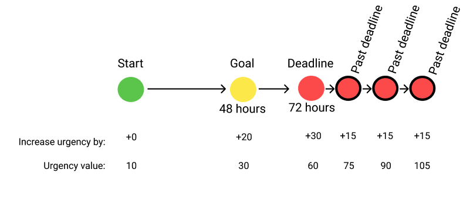

Service-level agreements (SLAs) help organizations complete work in a timely manner and enforce on-time performance by establishing a deadline for work completion. These obligations can range from informal response-time promises to negotiated contracts.
(Ideally insert a video that describes the info described on this page: SLAs, service-level intervals, urgency, escalation actions, and time sheet example.)
For each service-level agreement (SLA), there are four configurable intervals of time that standardize how long you have to perform a task:
The goal and deadline intervals are calculated from the start interval. The passed deadline interval is calculated from the end of the deadline interval and can be repeated as many times as desired as it is an additional opportunity to escalate or take action when a task is late.
The urgency value is used to prioritize tasks with higher urgency values over tasks with lower urgency values. Tasks start with an urgency level of 10 by default, but can range from 10-100 and can change value at different service-level intervals.
Higher priority tasks are listed first in the User Portal in Pega.
At the start of each service level interval, you can configure one or more of the following four actions to occur:
Consider a company that uses a timesheet application where an employee can submit a timesheet for a manager’s review. The company wants to apply an SLA on the approval task for the manager to make sure that the timesheets are approved quickly.
 (Ideally have interactive photo where students can click on relevant part of information and get the below information or video)
(Select all that apply)
Helps manager manage tasks based on urgency.
Helps companies train employees.
Increase on-time performance at company.
Improve user experience of company’s product.
A SLA establishes a way to increase company security.
A SLA establishes a work completion deadline.
A SLA establishes a training plan for employees.
A SLA establishes a way to generate service-level reports for each employee.